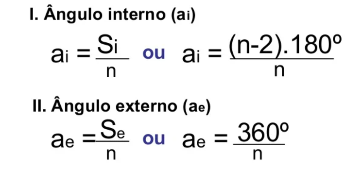
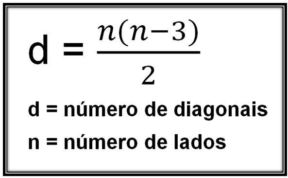

Geometria Plana
Ângulos de um Polígono
A soma dos ângulos internos de um polígono depende do número de lados que ele possui. Já a soma dos ângulos externos de qualquer polígono, independentemente do número de lados, é sempre 360 graus, isso porque cada ângulo externo é suplementar ao ângulo interno correspondente.

Diagonais de um Polígono
As diagonais de um polígono são segmentos de reta que conectam dois vértices não adjacentes. Em outras palavras, uma diagonal é uma linha que liga dois cantos do polígono que não estão lado a lado.
